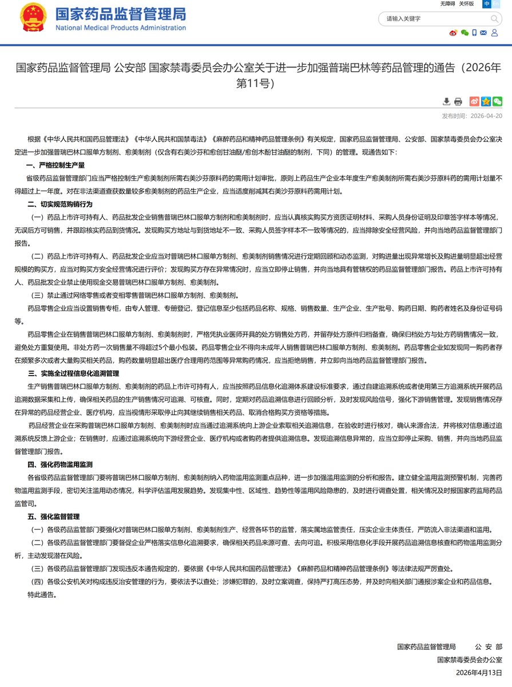

鼠尾草～🌿
@SalviaSWC
@HhvGgfd32905 是的，有关部门大概是疯了😁

鼠尾草～🌿
@SalviaSWC
我是一个小学生。学校里有一个小卖部，卖零食。
可是，就在前几天，班主任宣布小卖部以后再也不卖零食了。原因是，有个别坏学生从小卖部买完零食之后，带到班级里吃。甚至课也不上了，光顾着吃零食。
我知道这些坏学生的行为不好。但是，何必因为某些人，让我们正常买零食受影响，造成连带性代价呢？ https://t.co/OXAFfSEqh5
辱习小作文创作中
@HhvGgfd32905
@SalviaSWC 什么😧愈美都买不到了吗